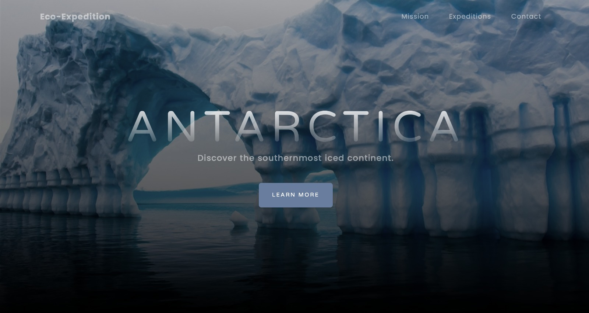

Propuesta
Somos Eco-Expedition y somos una empresa dedicada a los servicios, nuestra propuesta se basa en el ecoturismo, en donde nuestra empresa ofrece la posibildad de que el público pueda conocer la Antártida y a la vez educarlos sobre el ecosistema del cual estan visitando. Los turistas se hospedarán en cabañas hechas con materiales reciclados, y toda la energía utilizada provendrá de recursos renovables. A su vez, las recaudaciones se destinarán a la investigación y protección de la Antartida.
Nuestro público
Este proyecto apunta a un público serio que disfrute de las actividades en la Antártida y para que se capaciten sobre lo que sucede en la actualidad, y como se lleva a cabo el cuidado y mantenimiento de la misma, además de tener una variedad de actividades.
Amantes de Naturaleza y la Aventura: Personas que disfrutan de experiencias al aire libre y tienen una afinidad particular por la exploración de entornos naturales únicos. Viajeros que buscan emociones fuertes y están interesados en destinos menos convencionales.
Entusiastas del Ecoturismo: Aquellos que eligen destinos y actividades turísticas que minimizan el impacto ambiental y promueven la sostenibilidad. Personas conscientes del medio ambiente que buscan contribuir positivamente a la conservación de la naturaleza.
Viajeros Educados e Interesados en la Ciencia: Estudiantes, profesionales o entusiastas de la ciencia que desean aprender más sobre la Antártida, su ecosistema y los desafíos que enfrenta. Personas que aprecian las experiencias educativas y están interesadas en la investigación científica.
Aventureros Culturales: Viajeros que buscan experiencias que vayan más allá de lo convencional y deseen sumergirse en la cultura única de la Antártida, incluida su flora y fauna excepcionales. Individuos interesados en la historia y la geografía de la región.
Defensores de la Conservación: Personas apasionadas por la conservación del medio ambiente y la protección de áreas naturales vulnerables. Aquellos que buscan formas significativas de contribuir a la preservación de la Antártida y están dispuestos a respaldar proyectos que apoyen esta causa.
Viajeros Responsables: Individuos comprometidos con prácticas de viaje sostenibles, desde la elección del transporte hasta la selección de alojamientos respetuosos con el medio ambiente. Personas conscientes de la importancia de reducir su huella de carbono durante sus viajes.
¿Cómo obtendremos tráfico en la web?
Optimización para Motores de Búsqueda (SEO): Utilizar prácticas de SEO para garantizar que el sitio aparezca en los resultados de búsqueda relevantes cuando las personas busquen términos relacionados con ecoturismo en la Antártida.
Publicidad en Línea: Utilizar estrategias de publicidad en línea, como Google Ads, para dirigirse a audiencias específicas interesadas en ecoturismo y conservación.
Marketing de Contenido: Crear y compartir contenido relevante y valioso relacionado con la Antártida, la conservación y el ecoturismo a través de blogs, artículos y redes sociales para atraer a personas interesadas en estos temas.
Campañas en Redes Sociales: Utilizar plataformas de redes sociales para promocionar el proyecto, compartir imágenes cautivadoras y generar conciencia sobre la importancia de la conservación en la Antártida.
Colaboraciones y Alianzas: Establecer colaboraciones con organizaciones ambientales, empresas de turismo sostenible y otras entidades afines para ampliar la visibilidad y atraer a un público más amplio.
Objetivos del sitio web
Informar sobre el Proyecto, proporcionar información detallada sobre la propuesta de ecoturismo en la Antártida, destacando los aspectos educativos, sostenibles y de investigación.
Facilitar Reservas y contacto, Ofreciendo una plataforma donde los visitantes puedan obtener detalles sobre los paquetes de ecoturismo y realizar reservas para participar en las experiencias propuestas.
Transparencia, proporcionando información clara sobre cómo se utilizarán las recaudaciones para la investigación y protección de la Antártida, fomentando la transparencia y la confianza entre los visitantes.
Educación Ambiental, incluyendo secciones educativas que destaquen la importancia de la Antártida en términos de conservación y sostenibilidad, informando a los visitantes sobre la necesidad de proteger este entorno único.
Concepto del sitio web
El sitio web debería reflejar los valores fundamentales de la empresa: ecoturismo responsable, sostenibilidad ambiental y compromiso con la investigación y la protección de la Antártida. Utilizará un diseño limpio y moderno, con imágenes impactantes de la belleza natural de la Antártida y la construcción sostenible de las cabañas. La navegación será intuitiva, facilitando a los visitantes encontrar la información que están buscando, ya sea sobre las experiencias de ecoturismo, la sostenibilidad del alojamiento o el impacto positivo de sus contribuciones.
Identidad visual del proyecto
Nuestro dominio será ecoexpedition.com con nuestro slogan "Just Incredible", esto trasmite en la web una sensación de misterio y descubrimiento. El slogan "Just Incredible" destaca la increíble experiencia que los visitantes están a punto de descubrir. La combinación de minimalismo y elementos naturales en el diseño refuerza la conexión con la belleza cruda y natural de la Antártida. Al llegar al sitio, los internautas deben sentir la emoción de explorar un destino único y comprometido con la sostenibilidad y la conservación.

Mapa del Sitio
El siguiente diagrama simplificado representa las páginas y sus dependencias.

Roles de los integrantes en el proyecto
Nicolás Oroño : Diseñador, Programador
Pedro Moura : Diseñador, Programador
Santiago Vicari : Maqueteador, Comunicador web